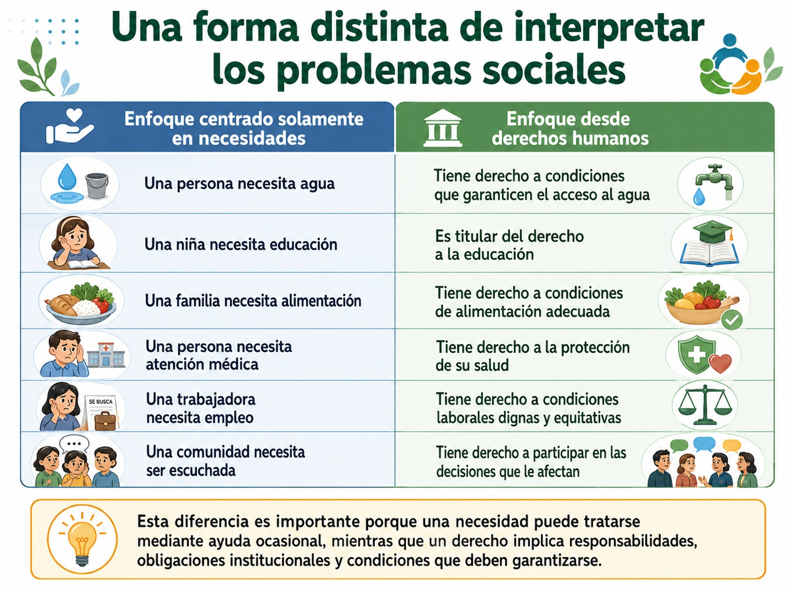
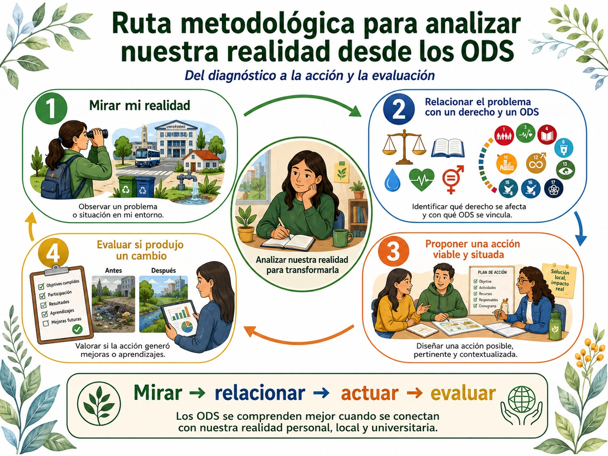

Después de revisar los ODS como una agenda orientada al desarrollo sostenible, es importante introducir una pregunta fundamental ¿para qué queremos alcanzar estos objetivos? El enfoque de los derechos humanos permite responder que el propósito último de los ODS no debería ser simplemente mejorar indicadores económicos, sociales o ambientales, sino crear condiciones que permitan a todas las personas vivir con dignidad y ejercer efectivamente sus derechos. Es importante que comprendamos que sin derechos humanos los ODS pierden sentido.
Dávila et al. (2023), sostiene precisamente que los derechos humanos y los ODS están estrechamente relacionados, porque ambos buscan garantizar a todas las personas, sin discriminación, condiciones vinculadas con los derechos sociales, económicos y ambientales. Recupera además el preámbulo de la Agenda 2030, en el que se establece explícitamente que los ODS pretenden hacer realidad los derechos humanos de todas las personas. Esto hace más precisa nuestra manera de interpretar el desarrollo sostenible.
No basta, por ejemplo, con aumentar la cobertura educativa si determinados grupos continúan enfrentando discriminación, exclusión o barreras que les impiden ejercer plenamente el derecho a la educación, tampoco basta con ampliar la infraestructura de agua si el acceso sigue siendo desigual, o con incrementar el empleo si las condiciones laborales no son dignas, eso nos hace pensar en la relación ODS, las condiciones para el desarrollo sostenible, el ejercicio efectito de derechos y la dignidad humana.
Es precisamente la dignidad humana lo que constituye el punto de articulación entre los derechos humanos y los ODS puesto que los derechos humanos abarcan desde derechos fundamentales como la vida y la libertad hasta aquellos que permiten dotar de condiciones dignas a la existencia, entre ellos alimentación, educación, trabajo y salud.
Este enfoque nos permite ir más allá de las necesidades y pensar en los derechos y esto es una de las aportaciones más importantes del enfoque de derechos consiste en modificar la forma de interpretar los problemas sociales, puedes observar ejemplos de estos distintos enfoques en la siguiente tabla:

Cinco principios para leer los ODS desde los derechos humanos
Ahora bien, podemos distinguir cinco principios éticos para leer los ODS desde los derechos humanos: dignidad, igualdad y no discriminación, participación, rendición de cuentas e interdependencia.
• Dignidad: significa reconocer que cada persona posee un valor que no depende de su situación económica, origen, género, edad, capacidades o condición social. Desde esta perspectiva, una política sostenible debe preguntarse ¿esta acción permite a las personas vivir de manera digna? No sería suficiente, por ejemplo, crear empleos si estos reproducen condiciones de explotación o precariedad.
• Igualdad y no discriminación: significa que el desarrollo sostenible debe beneficiar a todas las personas, pero además debe reconocer que no todas parten de las mismas condiciones. Aquí cobra importancia el principio de “no dejar a nadie atrás”. Este principio obliga a mirar primero a quienes enfrentan mayores barreras y distinguir entre una igualdad meramente formal y una igualdad capaz de modificar desigualdades reales. La pregunta fundamental sería: ¿quién está quedando fuera?
• Participación: significa que las personas no deberían ser exclusivamente receptoras de decisiones. El enfoque de derechos exige que puedan participar en los procesos que afectan su vida. Así, una política universitaria o comunitaria de sostenibilidad debería preguntarse ¿quién definió el problema?, ¿quién diseñó la solución?, ¿participaron las personas directamente afectadas?
• Rendición de cuentas: significa que los derechos necesitan responsables. No basta con afirmar que “todos debemos colaborar”. Gobiernos, empresas, universidades e instituciones poseen capacidades y responsabilidades diferenciadas. La rendición de cuentas pregunta ¿quién se comprometió?, ¿qué debía hacer?, ¿qué hizo realmente y qué resultados produjo? Este principio resulta particularmente importante para evitar que los ODS se reduzcan a buenas intenciones.
• Interdependencia: significa que los derechos están relacionados entre sí. La falta de acceso al agua puede afectar la salud; la pobreza puede reducir las oportunidades educativas; una educación insuficiente puede limitar el acceso al empleo; las desigualdades económicas pueden incrementar la vulnerabilidad ambiental.
En la siguiente imagen puedes observar los cinco principios:

De los indicadores a los derechos
El enfoque de derechos introduce también es una lectura crítica de los ODS, pues una institución podría mostrar buenos indicadores y, sin embargo, continuar reproduciendo desigualdades. Por ejemplo, podría aumentar el número de estudiantes en la matrícula y simultáneamente mantener barreras para estudiantes con discapacidad; disminuir el consumo energético y conservar condiciones laborales injustas; o realizar proyectos comunitarios sin permitir que las comunidades participen realmente en su diseño.
Por eso, debemos plantearnos pregunta especialmente útil al realizar una acción para el cumplimiento de los ODS: ¿esta acción amplía derechos o solo maquilla indicadores? El enfoque de derechos evita así que los ODS se conviertan en una lista de metas descontextualizadas. La pregunta deja de ser únicamente si estamos cumpliendo con los ODS y la ampliamos para observar qué derechos estamos haciendo efectivos y para quién.
Identificar contextos de vulnerabilidad de su realidad personal local.
Para llevar el enfoque de derechos a nuestra realidad cotidiana es necesario aprender a identificar contextos de vulnerabilidad. En este punto debemos realizar una distinción importante, la vulnerabilidad no está en la persona, está en las barreras. Esto significa que no deberíamos definir a determinadas personas como vulnerables como si se tratara de una característica natural o permanente. Es decir, una persona se encuentra en una situación de mayor vulnerabilidad cuando determinadas condiciones económicas, institucionales, sociales, ambientales o culturales dificultan el ejercicio de sus derechos.
En la siguiente tabla podemos observar siete dimensiones de vulnerabilidad y es importante decir que debemos identificar las barreras antes de proponer soluciones:

Mirar las barreras antes que las soluciones
Una práctica frecuente consiste en proponer inmediatamente soluciones. El enfoque de derechos sugiere identificar primero las barreras y acorde a ello, entonces proponer las soluciones. Por ejemplo, si alguien que estudia tiene dificultades para continuar sus estudios, no deberíamos concluir inmediatamente que necesita esforzarse más. Por el contrario, debemos preguntarnos:
- • ¿Tiene conectividad suficiente?
- • ¿Debe trabajar largas jornadas?
- • ¿Realiza tareas de cuidados familiares?
- • ¿Dispone de transporte?
- • ¿Existe alguna barrera institucional?
- • ¿Enfrenta discriminación?
- • ¿Puede acceder a los apoyos universitarios?
Al hacernos preguntas cómo estas, también cambia nuestra comprensión del problema. Pasamos de la comprensión de un problema individual a un problema estructural en el que aparece la persona en su contexto, las barreras que se interponen en el ejercicio de sus derechos y los derechos afectados.
Es decir, debemos:
- • Comprender problemas complejos
- • Cuestionar causas estructurales
- • Dialogar con otros saberes
- • Actuar con responsabilidad
- • Evaluar impactos reales
Como podemos ver, no basta con saber qué son los ODS hay que usarlos para leer y transformar la realidad.
En el siguiente diagrama te proponemos una ruta metodológica para analizar nuestra realidad desde los ODS mediante cuatro pasos:

- Botó-Álvarez & García-Fernández (2020). Sustainability. https://doi.org/10.3390/su12062546
- Danish Institute for Human Rights (2018). Human rights and the 2030 Agenda for Sustainable Development.
- Dávila Cedeño, M. L., Dávila Arteaga, C. A., & Dávila Cedeño, R. J. (2023). Derechos Humanos y los Objetivos de Desarrollo Sostenible (ODS). *FIPCAEC, 8*(1), 539–549.
Te proponemos que te apoyes con los siguientes videos: